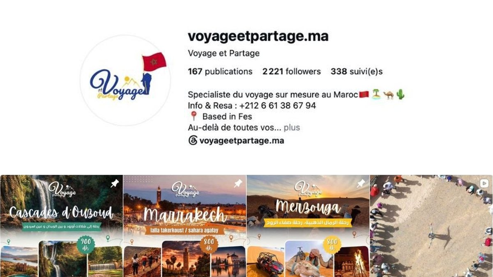

SOCIAL
CONTENU INSTAGRAM
Voyage et Partage
Agence de voyage sur mesure basée à Fès : visuels des circuits (cascades d'Ouzoud, Marrakech, Merzouga), stories à la une par destination, publications en français et en arabe.
Voir le compte Instagram